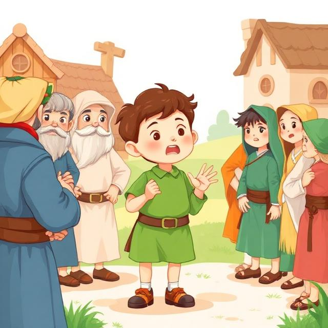

The shepherd boy saw that he had made everyone very angry, and knew he'd gone too far. He apologized to the villagers, and promised only to call them when a wolf really was there. After a few days, a wolf came to the pasture and attacked the boys sheep. When he cried "Wolf!" the villagers remembered his promise, and came running to drive the wolf away, saving the shepherd boy's sheep.

Back